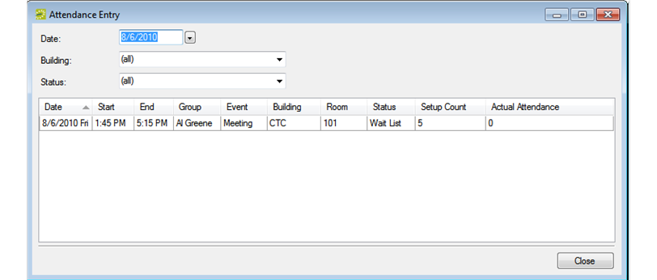
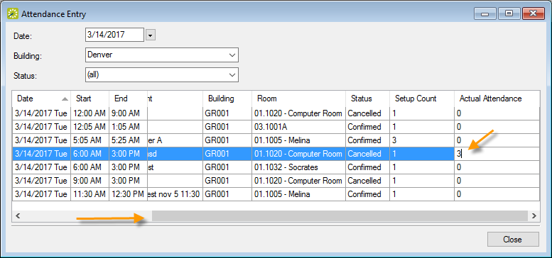

Recording Actual Attendance Numbers for Bookings
You use the Attendance Entry tool to view and record the actual attendance for bookings. (The tool does not address reservation-level attendance.) The actual attendance numbers that you enter do not replace the setup count (i.e., the estimated attendance) that you entered prior to an event. Reports that provide attendance information typically provide both the estimated attendance and the actual attendance.
- On the EMS main menu, click Reservations > Other > Attendance Entry. The Attendance Entry window opens.

- In the Date field, select a date for which you are recording the booking attendance, on or before the current day’s date. You can filter the results by building and/or a booking status.
- For each booking as needed, scroll right to the Actual Attendance column, double-click in the field to select the currently displayed value, and then enter the actual attendance number in the column.

- Click Close.